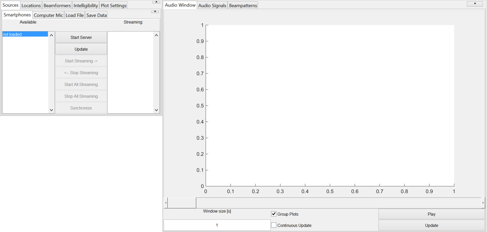
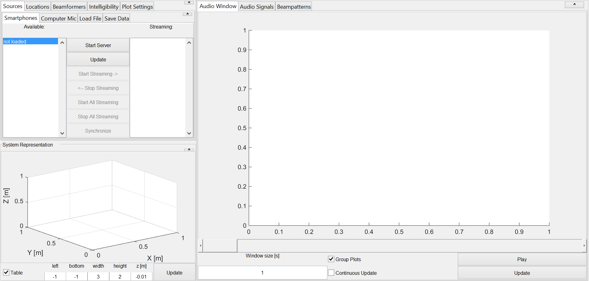

Contents
classdef main_window < handle
% MAIN_WINDOW Beamforming main window. % obj = MAIN_WINDOW(A) Start Beamforming main window. % % This class is a main gui window generator. % % Beamformer scripts: % DSB_BF.m Delay-Sum-Beamformer. % MVDR_BF.m Minimum variance distortionless response Beamformer. % MVDR_Directivity_BF.m MVDR Beamformer with microphone Directivity. % Delft_BF.m Delft Beamformer algorithm. TODO % % Quality estimation scripts: % pesq.m % % Communication Classes: % bfcom.m Communication class for beamformers. % mitm.m Communication class for the Smartphone App. % % User Interface Classes: % main_window.m Start Beamforming main window. % % % Written for the BSc graduation project Acoustic Enhancement via % Beamforming Using Smartphones. % % Team: S. Bosma R. Brinkman % T. de Rooij R. Smeding % N. van Wijngaarden E. Wouters % % Supervisor: Jorge Martínez Castañeda % TODO: add other supervisors % % Contact: E.H.Wouters@student.tudelft.nl % % See also BF_DATA, MITM, SMARTPHONE_SETTINGS_UI, % STD_PANEL, STD_SELECTOR_UI, GRID2POS, ...
Properties
properties (Constant)
% Constants
Name = 'Beamformer Demo Window'
end
properties
% Properties
UI
DataBuffer
Mitm % Handle of class to manage the server for smartphones
Process1
end
Methods
methods
% Main GUI Window Constuctor function obj = main_window(varargin)
try close all; catch; end % Try to close all other windows % Create mitm object obj.Mitm = mitm(1337,48000,4800,0,obj); % Data Buffer obj.DataBuffer = bf_data(obj); obj.DataBuffer.SourceID = 'DataBuffer'; % obj.Process1 = std_processor(obj,'F0:27:65:36:5D:E5'); % Graphics Code obj.UI = obj.graphicsCode();
Place Main Window handle in workspace
assignin('base','DemoWindow',obj); % assignin('base','obj',obj);
end
ans =
main_window with properties:
Name: 'Beamformer Demo Window'
UI: [1x1 struct]
DataBuffer: [1x1 bf_data]
Mitm: [1x1 mitm]
Process1: []
Close Request function
function closeReq_Callback(obj,~,~) obj.Mitm.stop; obj.UI.MainFig.HandleVisibility = 'off'; close all; obj.UI.MainFig.HandleVisibility = 'on'; % Possible to save gui state here delete(obj.UI.MainFig) end function update(obj) % obj.Process1.update(); % TODO end
Demo Window Graphics Code
function UI = graphicsCode(obj)
% GRAPHICSCODE Graphics Code % Create figure UI.MainFig = figure('name',obj.Name,'NumberTitle','off','resize', 'on',... 'units','normalized','outerposition',[0.00 0.05 1 1-0.05],... 'CloseRequestFcn',@obj.closeReq_Callback); drawnow;
Create Plots Panel
UI.Plots = std_panel(UI.MainFig, grid2pos([2,1,2,2,3,2]),'Plots',... {'Audio Window','Audio Signals','Beampatterns'}); % add Plots UI.PlotWindow = audio_window_ui(UI.Plots.Tabs{1},obj); UI.PlotAudio = plot_audio_ui(UI.Plots.Tabs{2},obj); % UI.LiveWindow = live_window_ui(UI.Plots.Tabs{1},obj); % Create Settings Panel UI.Settings = std_panel(UI.MainFig, grid2pos([1,1,1,1,3,2]),'Input Channels',{'Sources','Locations','Beamformers','Intelligibility','Plot Settings'}); % Add sources panels UI.Sources = std_panel(UI.Settings.Tabs{1}, grid2pos([]),'Sources',{'Smartphones','Computer Mic','Load File','Save Data'}); UI.Smartphones = smartphone_settings_ui(UI.Sources.Tabs{1},obj); UI.Microphones = comp_mic_ui(UI.Sources.Tabs{2},obj); UI.LoadFile = load_file_settings_ui(UI.Sources.Tabs{3},obj); UI.SaveFile = save_file_settings_ui(UI.Sources.Tabs{4},obj); % Add Locations panel UI.ChannelLocations = channel_locations_ui(UI.Settings.Tabs{2},obj); % Add beamformers panel UI.Beamformers = std_panel(UI.Settings.Tabs{3}, grid2pos([]),'Beamformers', ... {'Channels','DSB','MVDR','MVDR Directivity','MVDR RIR'}); UI.BFChannels = std_selector_ui(UI.Beamformers.Tabs{1},obj,'Beamformer Channels'); UI.DSB = std_panel(UI.Beamformers.Tabs{2}, grid2pos([]),'DSB'); % TODO UI.MVDR = std_panel(UI.Beamformers.Tabs{3}, grid2pos([]),'MVDR'); % TODO UI.MVDRDir = std_panel(UI.Beamformers.Tabs{4}, grid2pos([]),'MVDR Directivity'); % TODO UI.MVDRRIR = std_panel(UI.Beamformers.Tabs{5}, grid2pos([]),'MVDR RIR'); % TODO UI.PlotSettings = std_selector_ui(UI.Settings.Tabs{5},obj,'Plot Settings');
Create System Representation Panel
Plot of current source positions
UI.Rep = std_panel(UI.MainFig, grid2pos([1,2,1,1,3,2]));
UI.Rep.Name = 'System Representation';
UI.Rep.Panel.Title = 'System Representation';
UI.SysRep = sys_rep_ui(UI.Rep.Panel,obj);
drawnow;
 end
end
end